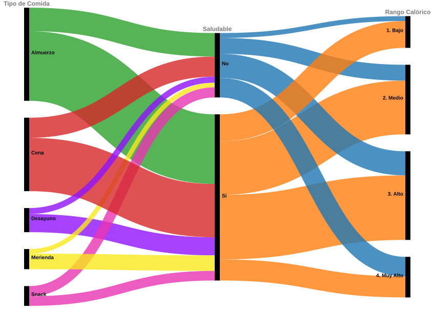

¿Cómo varía mi consumo calórico a lo largo del tiempo?
Evolución del total de calorías consumidas por día. Permite identificar el pico del período, la tendencia general y los días con comportamiento atípico.
El consumo calórico diario presenta variaciones a lo largo del período analizado, con un pico significativo al inicio del registro seguido de una disminución progresiva.
¿Cómo se distribuye mi ingesta calórica según el tipo de comida y si fue saludable?
El diagrama alluvial traza el flujo de calorías desde el tipo de comida, pasando por su calidad nutricional (saludable/no saludable), hasta el rango calórico resultante. El grosor de cada flujo representa el volumen calórico acumulado.

El diagrama alluvial permite observar cómo se distribuye el volumen calórico desde el tipo de comida hacia su clasificación como saludable o no saludable, y finalmente hacia distintos rangos calóricos.
Se identifica que las comidas principales, especialmente el almuerzo y la cena, concentran la mayor parte del flujo calórico total.
También se observa que una parte importante de las calorías proviene de comidas clasificadas como saludables. Esto indica que una comida saludable no necesariamente implica un bajo aporte calórico.
Por otro lado, los snacks, meriendas y desayunos presentan flujos más reducidos, por lo que no parecen ser los principales responsables del volumen calórico total. El mayor margen de mejora se identifica en la porción de comidas principales.
Es importante aclarar que el ancho de los flujos representa el volumen calórico acumulado y no la cantidad de registros individuales.
¿Los días que entreno y mi estado de ánimo influyen en el total de calorías consumidas?
Cada punto representa un día completo. El eje vertical muestra el total de calorías consumidas, el color indica el estado de ánimo predominante y la forma refleja si hubo entrenamiento (● sí / + no). La línea de tendencia lineal permite visualizar la dirección general del consumo a lo largo del período.
El gráfico de dispersión permite analizar la relación entre el entrenamiento, el estado de ánimo y el consumo calórico diario. Cada punto representa un día completo, revelando la variabilidad del comportamiento a lo largo del período.
El hallazgo más notable es que los dos días con estado de ánimo negativo (Malo) presentan comportamientos opuestos: el valor máximo del período (3.170 cal el 16/04) y un valor cercano al mínimo (1.624 cal el 01/05). Esto sugiere que el estado de ánimo negativo no produce un patrón único, sino que puede asociarse tanto a excesos como a restricciones en la ingesta.
Respecto al entrenamiento, no se observa una relación directa entre entrenar o no y la cantidad de calorías consumidas: tanto los días con entrenamiento (●) como sin él (+) aparecen distribuidos a lo largo de todo el rango vertical.
La línea de tendencia muestra una disminución sostenida del consumo calórico hacia el final del período, independientemente del estado de ánimo o el entrenamiento, lo que podría reflejar una adaptación progresiva de los hábitos alimenticios.
¿En qué franjas horarias se concentra el consumo calórico promedio según el tipo de entrenamiento realizado?
El mapa de calor cruza las franjas horarias de las ingestas con el tipo de entrenamiento realizado. La intensidad del color representa el consumo calórico promedio, permitiendo identificar en qué momentos del día se concentra una mayor carga calórica.

El mapa de calor permite analizar la distribución del consumo calórico promedio a lo largo del día en función del tipo de entrenamiento realizado.
Se observa que la franja de mediodía (12–15h) concentra los valores más altos en todos los tipos de entrenamiento, seguida por la noche (21–24h), que también presenta niveles elevados de forma consistente.
El valor más alto corresponde al entrenamiento mixto en el mediodía (1.600 cal), aunque se trata de un registro único y debe interpretarse con cautela. Los tipos con más datos, Cardio y Fuerza, muestran promedios más estables en esa franja, entre 620 y 690 cal.
En términos generales, los momentos de mayor carga calórica —mediodía y noche— se mantienen consistentes independientemente del tipo de entrenamiento, lo que sugiere que los hábitos horarios de alimentación no varían significativamente según la actividad física del día.